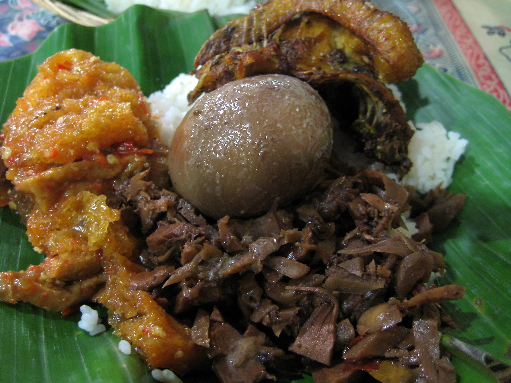

Kuliner Yogyakarta
Ada yang manis, gurih, dan pedas.
Kenali makanan dan minuman yang sering dijumpai di kota maupun kampung-kampung sekitar.

Mau makan apa?
Gunakan pencarian atau pilih kategori untuk menemukan hidangan.
Tidak ada hidangan yang cocok dengan pencarianmu.
Cari sesuai seleramu
Atur tingkat manis, gurih, dan pedas. Kami akan mencarikan hidangan dengan rasa yang mendekati pilihanmu.
Pencocok ini membandingkan tiga tingkat rasa pilihanmu dengan profil sederhana tiap hidangan. Gunakan sebagai petunjuk, bukan penilaian rasa yang objektif.
Pilih isi nampan
Tambahkan beberapa menu angkringan untuk melihat perkiraan harganya.
Pesananmu
Pilih menu untuk mulai.
Perkiraan total
Rp0
Belum menentukan pilihan?
?
Tekan tombol untuk mendapat satu saran hidangan.